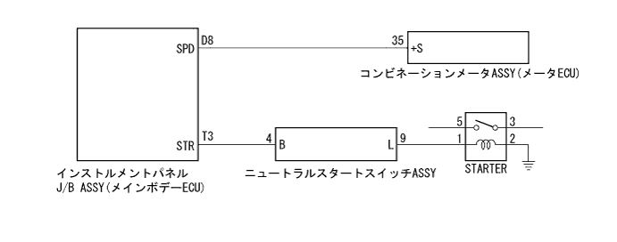
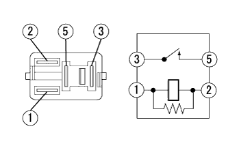
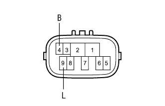
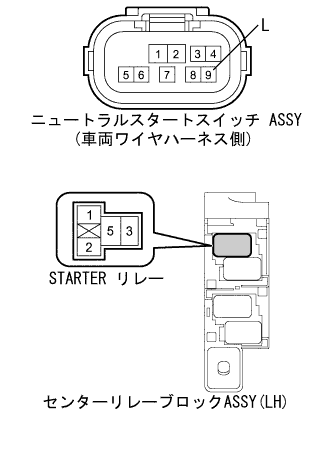

DTC B2283 Vehicle Speed Sensor Malfunction |
| DTC No. | DTC Detection Condition | Inspection Area |
|---|---|---|
| B2283 |
|
|

| Step 1 | Read DTC |
Clear the DTCs.
After 320 seconds or more have elapsed since turning the IG ON, check the DTCs again and check whether DTCs B2282 and B2283 are output.
| Result | Proceed to |
|---|---|
| Only B2283 is output again | A |
| B2282 is output | B |
| No DTC is output | C |
|
| ||||
|
| ||||
| A | |
| Step 2 | Read DTC |
Using SST (TaSCAN), check the DTC output status of the skid control computer.
|
| ||||
| OK | |
| Step 3 | Inspect Combination Meter Assembly |
Check that the speedometer operates normally.
|
| ||||
| OK | |
| Step 4 | Read TaSCAN Data |
ECU Data Monitor
Using SST (TaSCAN), perform data monitor of the instrument panel J/B assembly (main body ECU).
| Item | Condition | Reference Value |
|---|---|---|
| Neutral SW | P, N position / Other than P, N position | ON/OFF |
|
| ||||
| OK | ||
| ||
| Step 5 | Inspect STARTER Relay |
 |
Resistance Inspection
Remove the STARTER relay.
Using SST (Toyota electrical tester), inspect the resistance between each pair of relay terminals.
| Tester Connection | Condition | Standard |
|---|---|---|
| 1 - 2 | Always | 95 to 135Ω(20°C) |
| 3 - 5 | Always | 10k Ω or higher |
Using SST (Toyota electrical tester), check the resistance between the terminals when battery voltage is applied between terminals 1 and 2.
| Tester Connection | Condition | Standard |
|---|---|---|
| 3 - 5 | When battery voltage is applied | Below 1 Ω |
|
| ||||
| OK | |
| Step 6 | Inspect Neutral Start Switch Assembly |
 |
Resistance Inspection
Disconnect the neutral start switch assembly connector.
Using SST (Toyota electrical tester), inspect the resistance between the connector terminals.
| Tester Connection | Condition | Standard |
|---|---|---|
| 4(B) - 9(L) | P, N position | Below 1 Ω |
| 4(B) - 9(L) | Other than P, N position | 10k Ω or higher |
|
| ||||
| OK | |
| Step 7 | Inspect Wire Harness (Instrument Panel J/B Assembly (Main Body ECU) - Neutral Start Switch Assembly) |
Resistance Inspection

Disconnect connector T of the instrument panel J/B assembly (main body ECU).
Using SST (Toyota electrical tester), inspect the resistance between the terminals of the vehicle side wire harness connector.
| Inspection terminals (Main body ECU - Switch) | Condition | Standard |
|---|---|---|
| T3(STR) - 4(B) | Always | Below 1 Ω |
Using SST (Toyota electrical tester), inspect the resistance between the terminal of the vehicle side wire harness connector and body ground.
| Inspection terminals (Main body ECU or switch - Body ground) | Condition | Standard |
|---|---|---|
| T3 (STR) or 4 (B) - Body ground | Always | 10k Ω or higher |
|
| ||||
| OK | |
| Step 8 | Inspect Wire Harness and Connector (Neutral Start Switch Assembly - STARTER Relay) |
 |
Resistance Inspection
Using SST (Toyota electrical tester), inspect the resistance between the terminals of the vehicle side wire harness connector.
| Inspection Terminal (Switch - Relay) | Condition | Standard |
|---|---|---|
| 9 (L) - 1 | Always | Below 1 Ω |
Using SST (Toyota electrical tester), inspect the resistance between the terminals of the vehicle side wire harness connector.
| Inspection Terminal (Relay - Body Ground) | Condition | Standard |
|---|---|---|
| 9 (L) or 1 - Body ground | Always | 10K Ω or higher |
| Inspection Terminal (Relay - Body Ground) | Condition | Standard |
|---|---|---|
| 2 - Body ground | Always | Below 1 Ω |
|
| ||||
| OK | ||
| ||